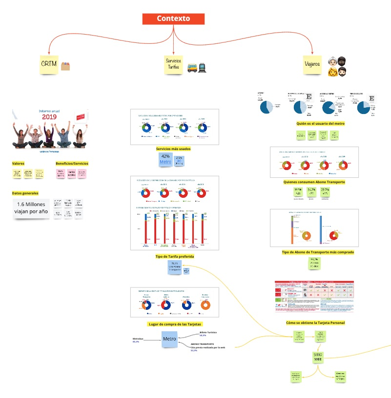
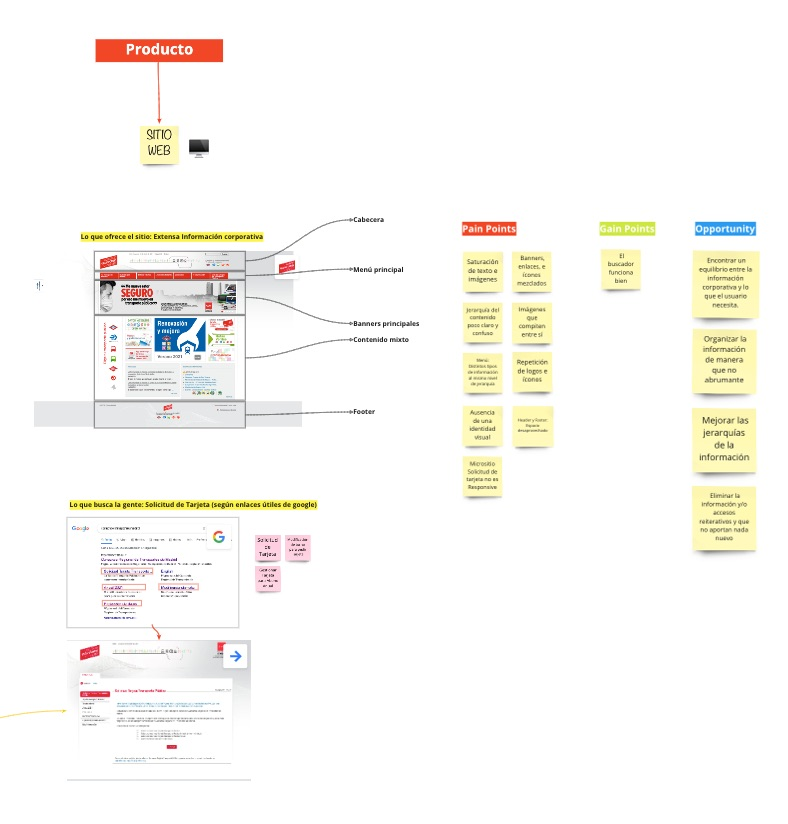
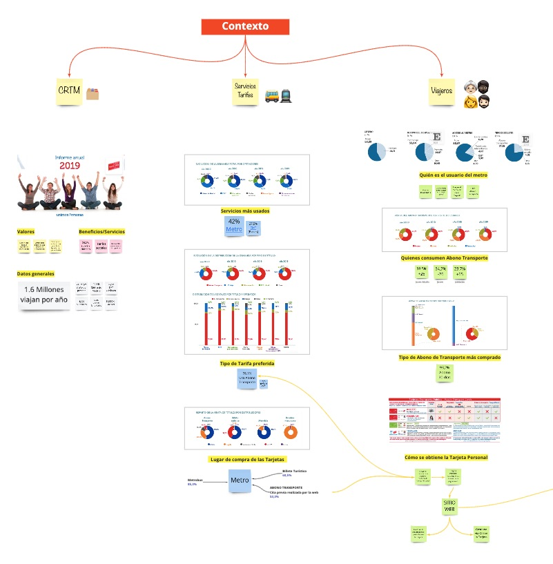
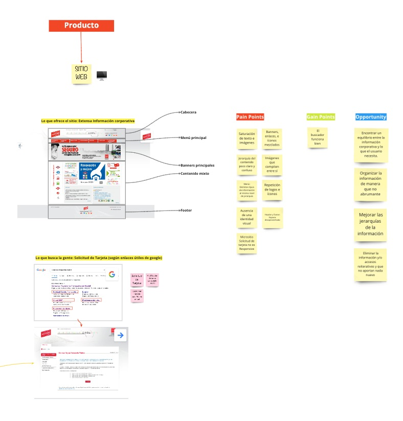

1. Understand
Search and analysis
Get some context and analyze the website.
 Synthesis
After the previous analysis I got some assumptions.
Problem

Website Redesign Proposal
Personal Analysis
Research and Analysis
Argentina
1 week
2021
Due to the complexity of the website, people use Google to find the shortcut to get the card.
Get some context and analyze the website.
 After the previous analysis I got some assumptions.
Most potential users find information in different places. They browse many sites and also rely on word of mouth for the best used card information.
The final sketch tries to solve the main question of the problem. However, it is necessary to have contact with the client in order to obtain more information that helps to better adjust and define the problem.
In the sketch we try to solve the first 4 ideas.